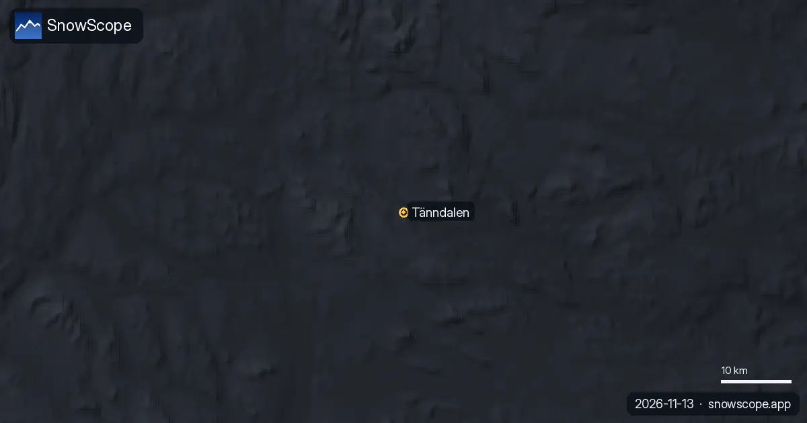
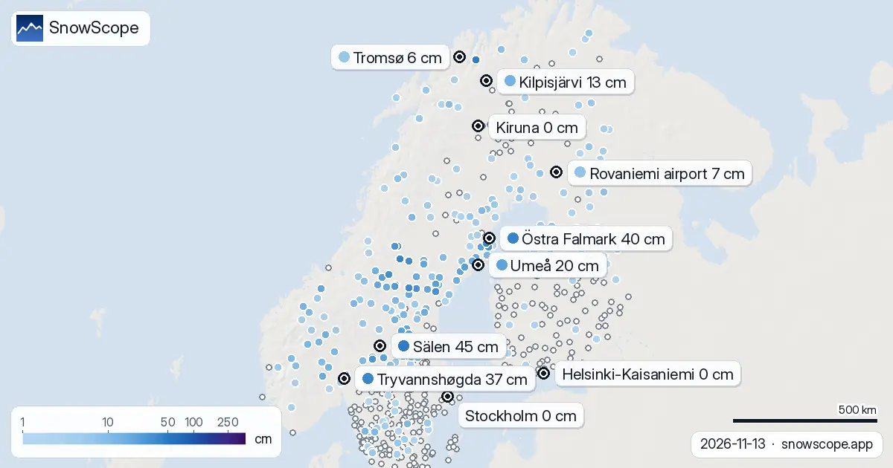

Snö i Funäsdalsfjällen: Tänndalen åker på en liten yta, Ramundberget väntar (14 november 2026)
I Funäsdalsfjällen är vinterns första skidåkning redan i gång, i mycket liten skala. Tänndalen öppnade den 24 oktober, och enligt liftstatusen den 13 november finns bara en liten yta för allmänheten, mest på helgerna. Närmaste väderstation, Ljusnedal på 585 m och 19 km från Tänndalen, mätte 7 cm snö den morgonen. Ramundberget, lite längre norrut, rapporterade 0 cm i backarna och öppnar den 19 december.
Se snöprognosen för Tänndalen live i SnowScope-appenSnödjup, pudervarningar och 3D-kartan, gratis.
Stationen och backarna
Ljusnedal hade ingen snö fram till den 10 november, sedan 2 cm, 6 cm och 7 cm de tre följande morgnarna. Tänndalens dalstation ligger på 757 m och toppen på 1 020 m, så backarna ligger högre än stationen, och det som går att åka är en liten yta som anläggningen har preparerat.
Vi uppskattar nysnön de senaste sju dagarna till ungefär 8 cm i Tänndalen och 7 cm i Ramundberget.

Veckan som kommer
Vi räknar med ungefär 9 cm på toppen i Tänndalen och 8 cm på toppen i Ramundberget de kommande sju dagarna. Andra prognoser ger 11 till 22 cm på Tänndalens topp och 9 till 25 cm i Ramundberget. Det blir inget regn på de här höjderna, och snögränsen ligger kvar runt 360 till 370 m, långt under byarna. Kalla nätter betyder också mer snötillverkning.
Normalt snödjup för säsongen
Våra 46 tidigare vintrar ger Tänndalen 29 cm på toppen och 10 cm i dalen den 14 november, och 58 respektive 27 cm den 15 december. Ramundberget är väldigt likt: 30 cm på toppen och 11 cm i dalen den 14 november. Regionen ligger alltså under det normala i dag, men inte långt ifrån i dalen.
Båda anläggningarna har en lång vit säsong på toppen, ungefär 224 dagar i Tänndalen och 227 i Ramundberget en normal vinter. Historiken visar också en förlust: Tänndalens typiska maxdjup på toppen sjönk från 134 cm under de första 15 vintrarna till 115 cm under de senaste 15.
Öppningsdatum
Tänndalen: öppet sedan premiären den 24 oktober på en liten yta, allmän åkning på helgerna, fler liftar så fort snön räcker. Ramundberget: säsong från 19 december 2026 till 11 april 2027, enligt sidan med öppettider.
Tips för skidåkare
- Tidig åkning på en eller två nedfarter är full av träningsgrupper; i Tänndalen är det på helgerna som ytan för allmänheten är öppen.
- Ta med gamla skidor: det tidiga snötäcket över stenarna är tunt utanför den preparerade nedfarten.
- Vägen över Flatruet och de höga passen kan stängas vid hård vind; kolla väglaget.
Fler kartor (externa webbplatser)
Referenser och källor
- SMHI, öppna data: dagligt snödjup vid svenska väderstationer www.smhi.se/data/meteorologi/ladda-ner-meteorologiska-observationer
- Tänndalen, officiell sida och liftstatus, läst 2026-11-13 www.tanndalen.com/paa-plats/liftstatus/
- Ramundberget, officiell sida: öppettider och liftstatus, läst 2026-11-13 www.ramundberget.se/sv/information/oppettider
- Ramundberget, liftstatus (officiell) www.ramundberget.se/sv/information/liftstatus-vinter
- Lavinprognoser, lavinprognoser för de svenska fjällen www.lavinprognoser.se/
Om siffrorna
Uppmätt snö: morgonavläsningar den 13 november 2026 vid de officiella väderstationerna i Sverige (SMHI öppna data), Finland (FMI öppna data, CC BY 4.0) och Norge (MET Norways stationsrapporter, CC BY 4.0, publicerade av Ogimet). Norges nationella snökarta seNorge (NVE och MET Norway, NLOD) ger uppskattningarna på ett rutnät om 1 km för backarna. Våra siffror: SnowScopes prognos för de kommande sju dagarna på tre höjder i skidområdet, jämförd med oberoende prognoser (ECMWF, ICON, GFS, GEM) för 14 till 20 november; snöhistorik för 46 tidigare vintrar (1980-81 till 2025-26), en modell av det förflutna korrigerad för höjd. Öppningsdatum: anläggningarnas egna sidor, lästa den 13 november 2026. Pistlängd och antal liftar: kartläggning i OpenSkiMap.
Officiella lavinprognoser: Lavinprognoser (Naturvårdsverket)
Citera den här rapporten
För forskning, undervisning eller press: siffrorna och diagrammen får återanvändas fritt under CC BY 4.0 med den här källhänvisningen.
SnowScope (2026), Snö i Funäsdalsfjällen: Tänndalen åker på en liten yta, Ramundberget väntar (14 november 2026), https://snowscope.app/blog/sv/2026/11/funasdalsfjallen-tanndalen-ramundberget-snow-14-november-2026.html, hämtad 2026-11-14
SnowScope (Atlas Labs). (2026, November 14). Snö i Funäsdalsfjällen: Tänndalen åker på en liten yta, Ramundberget väntar (14 november 2026). SnowScope snow reports. https://snowscope.app/blog/sv/2026/11/funasdalsfjallen-tanndalen-ramundberget-snow-14-november-2026.html
BibTeX
@misc{snowscope2026funasdalsfjallentanndale,
author = {{SnowScope (Atlas Labs)}},
title = {Snö i Funäsdalsfjällen: Tänndalen åker på en liten yta, Ramundberget väntar (14 november 2026)},
year = {2026},
month = nov,
howpublished = {\url{https://snowscope.app/blog/sv/2026/11/funasdalsfjallen-tanndalen-ramundberget-snow-14-november-2026.html}},
note = {Published 2026-11-14 19:59 UTC; accessed 2026-11-14}
}· CC BY 4.0 · Metoder, data och verktyg →
Tänndalen: snö och temperatur efter höjd, i vinter jämfört med förra (verktyg) →
Följ Tänndalen
Gratis: ett meddelande när nysnö är på väg, och prognosen varje morgon.
Fler snörapporter

Hundägare i Oslo, 13 november 2026: 4 cm snö på Blindern, 31 cm vid Bjørnholt och 37 cm på Tryvannshøgda. Var hunden får springa lös, vad koppelreglerna säger i november och en kall, torr lördag.

Uppmätt snö på marken den 13 november 2026 i Oslo, Bergen, Trondheim, Tromsø, Stockholm, Göteborg, Östersund, Umeå, Luleå, Kiruna, Helsingfors, Tammerfors, Uleåborg och Rovaniemi: från 20 cm i Umeå till barmark i Kiruna.

Luleå den 13 november 2026: stationen vid Kallax flygplats skickade inget snödjup i dag, men stationerna runt staden mätte 3 till 7 cm, allt nytt sedan torsdagen, och mer snö faller på fredagen.